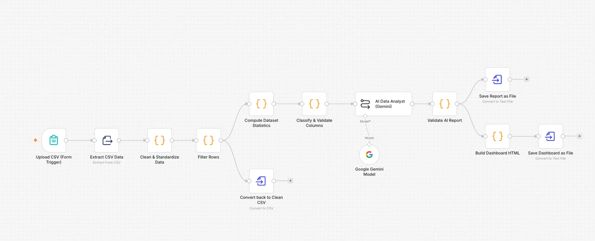
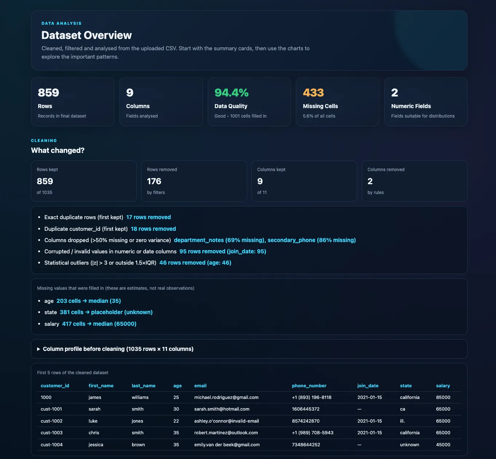
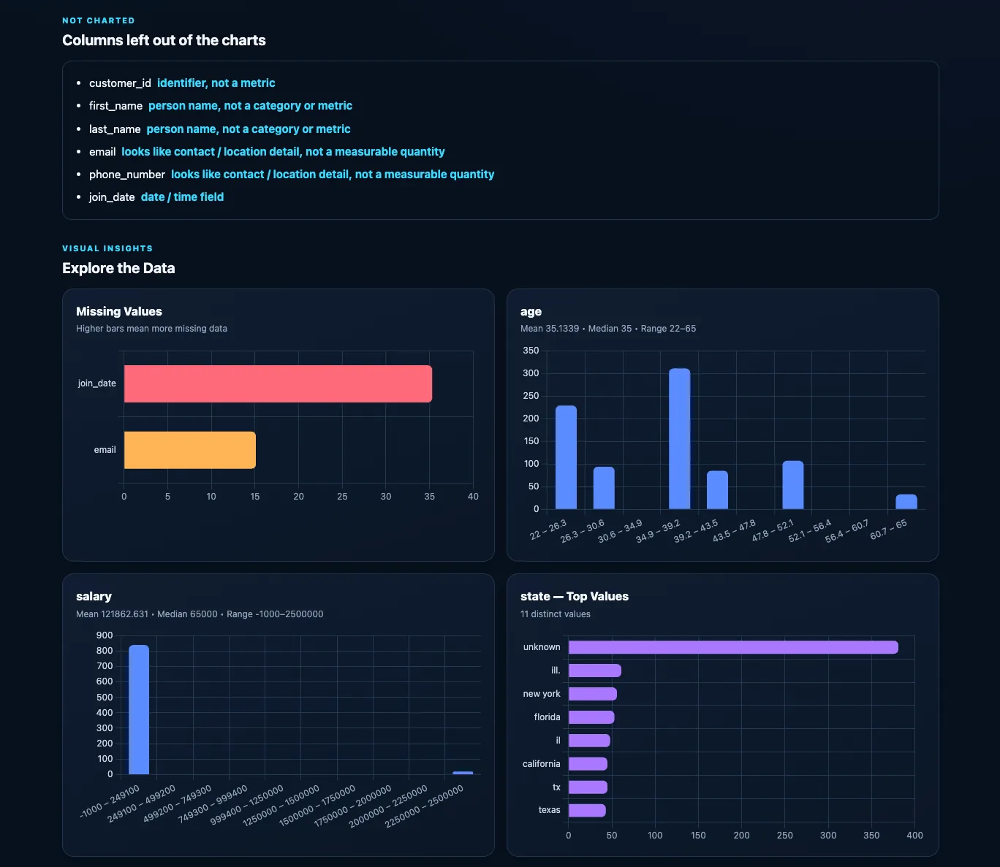
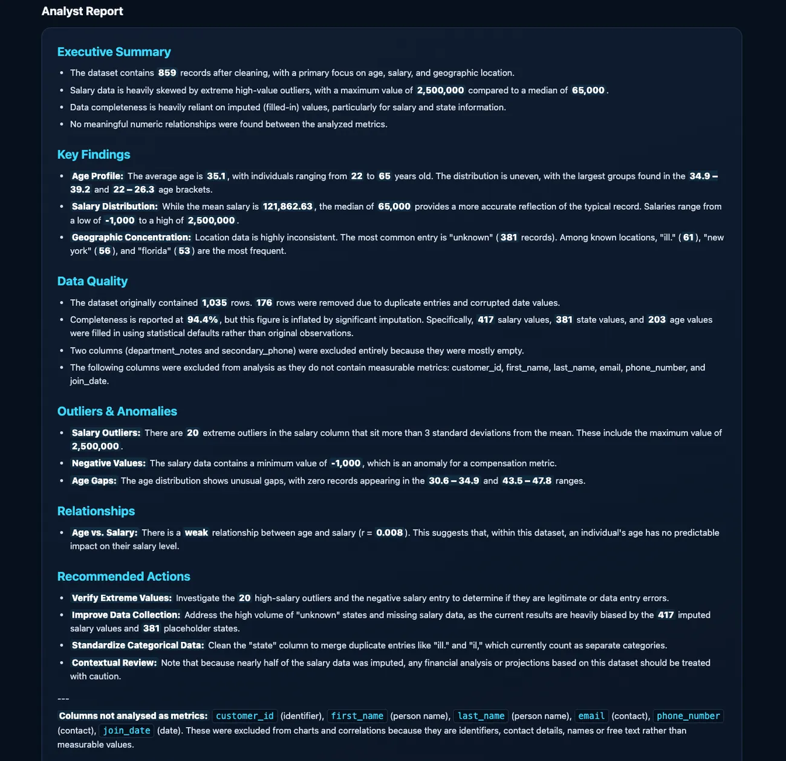

The problem
Turning a raw CSV into something people can read usually means cleaning it, working out the numbers and building charts by hand, every time. I wanted to see how much of that I could automate in one workflow, and how to keep the AI part honest.
How it works
A user uploads a CSV through a form, and the workflow does the rest.
1 · UploadA CSV is uploaded through an n8n form
↓
2 · CleanJavaScript steps remove duplicates, drop mostly-empty columns, standardise values, remove corrupted entries and fill gaps. Every change is logged.
↓
3a · FilterConfigurable row filters, outlier and date rules
3b · ExportThe cleaned data is saved back out as a CSV
↓
4 · CalculateStatistics, a data quality score, distributions and correlations are computed in code
↓
5 · ClassifyEach column is checked for whether it makes sense to chart or analyse
↓
6 · WriteGemini writes the analysis report from those real figures
↓
7 · CheckThe report is validated in code before it is used
↓
8 · VisualiseThe report and a Chart.js dashboard are built and saved as files

Key decisions
- Numbers come from code, not the AI. I calculate the statistics myself and hand the results to Gemini, so the report cites real figures from the whole dataset and not numbers the model guessed.
- Not every column deserves a chart. A classifier step blocks identifiers, names, emails, phone numbers and dates from being charted or correlated. The dashboard lists which columns were left out, and why.
- Check the AI's output. After Gemini writes the report, a code step removes any line that presents statistics for a column the classifier blocked.
- Be open about the cleaning. The dashboard shows what was removed and why, and labels filled-in values as estimates, not real observations.
What you get
3 outputs
A cleaned CSV, an AI-written analysis report and an interactive dashboard, all from one upload. The examples below come from a sample customer dataset of 1,035 rows.



What I'd improve
The sample run shows where it still falls short.
- Outliers. The salary column still has extreme values (up to 2.5 million and even a negative), which skews the mean. Outlier handling is configurable but I left it off for this run, and I'd turn on a sensible default.
- Messy categories. "ill." and "il" count as separate states. I'd add value standardisation for categorical columns.
- Imputation. Filling many gaps with the median keeps rows but inflates the quality score, which the report itself points out. I'd make that trade-off adjustable.